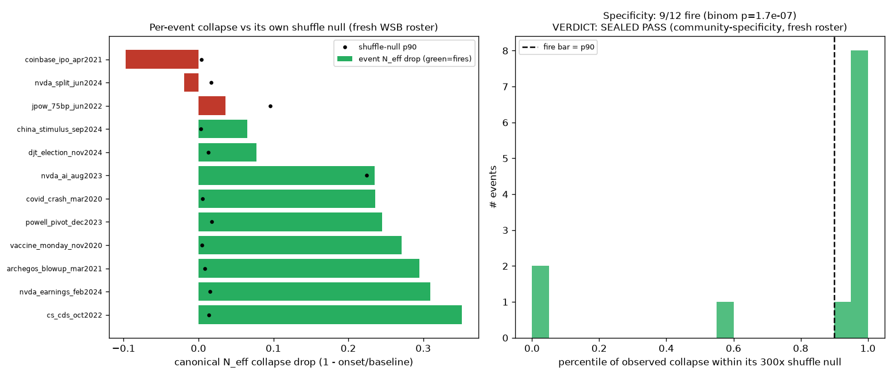
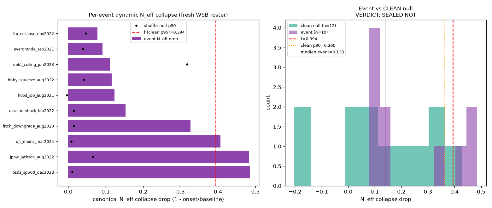
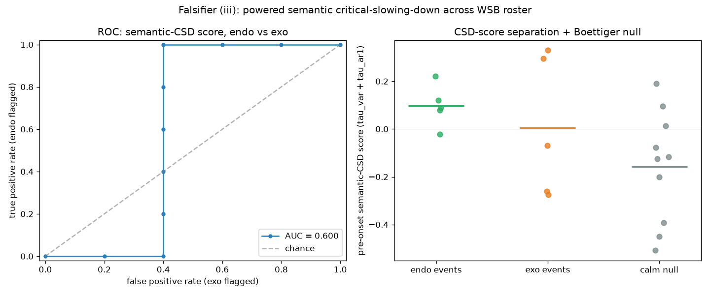
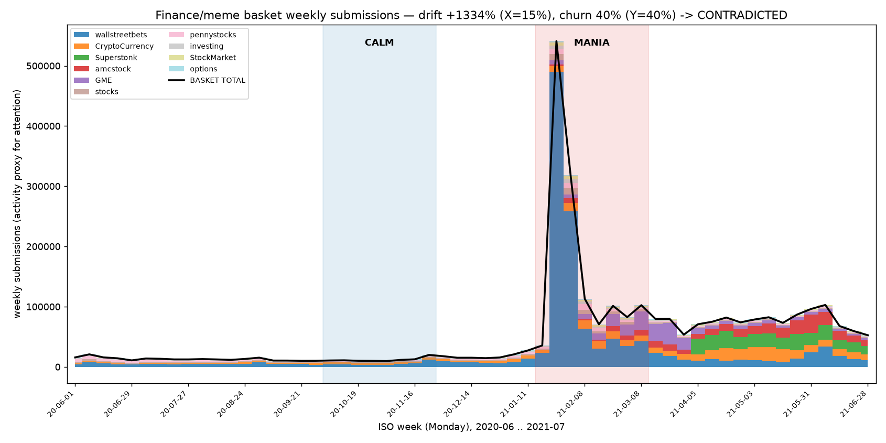
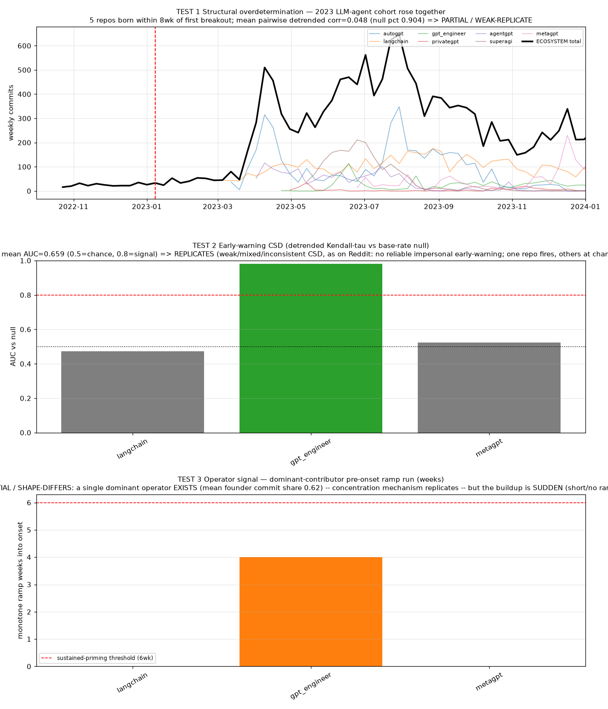

The framework was turned into decision rules and run against real data: Reddit comment dumps (billions of rows), Wikipedia edit histories, and GitHub repositories. The structural gear — near-decomposability, operator concentration — carries. The four powered dynamical claims all deflate, which is the split the theory predicts: predictability lives only in the bounded special regime the framework claims for it. Below is every verdict, with its real numbers and figure.
How these tests were run
The rules of engagement
Four rails, applied to every test on this page
Nulls against the prosecutor's fallacy. A signal must beat a matched null: a block-label shuffle (does the effect depend on the specific communities, or any grouping?) and a matched calm window (does it happen more at a real event than in a quiet period on the same object?).
Look-ahead-free. Onsets are fixed from public event dates before any graph is built; filters run strictly causally; no future information enters a forecast.
Proxy data. These run on mention-density and interaction-graph proxies, not a calibrated social state. They are illustrative of direction, magnitude and mechanism on real rosters — not a deployed classifier.
Negative results reported in full. Three of the four powered second-wave tests deflate; that deflation is the most important empirical news here, because it is the exact pattern a bounded psychohistory would produce.
The scorecard
Every test, and where it stands
The paper names eight tests plus a sharpening of the block test. Five now carry powered runs against real data; four are pending a live world-model training run (blocked on compute, not on more data).
Test
The bet
Verdict
Key number
(ii′)
Dynamic Neff collapse is community-specific before endogenous cascades
MEASURED
9/12 fire against their own block-label shuffle null, binomial p = 1.7×10⁻⁷
(iii)
Early warning (critical slowing-down) precedes cascades
Focusing: cascades are concentration singularities of the transport equation, a fourth tipping type the B/N/R rule cannot name
OPEN
synthetic threshold measured (β/D between 40 and 50 on the paper's own generator, total conserved to 1e-14 throughout); real-series T* fit and a fourth adjudication box not yet run
(i)
Attention / activity is conserved (zero-sum) at ecosystem scale
CONTRADICTED
finance-subreddit basket ballooned ~14× in the mania
(ii)
Blocks are independent in calm windows
WEAK SUPPORT
macro Neff 1.90 of 8, bottoms 0.47 at a real shock
(iv)
Forecast skill in the smooth regime beats baselines
PENDING
awaits a live world-model training run
(v)
Published fixed points are reliable
PENDING
awaits a live world-model training run
(vi)
Lucas invariance: drift stays in an absorbable band
PENDING
world-model training run + multi-regime calibration
The four pending tests are blocked on compute, not data
Tests (iv)–(vii) are the forward-forecasting tests. They do not need more data; they need a live forecasting engine run forward: the modern instantiation (a trained world model plus an LLM/LRM ensemble). The binding constraint is a stronger world-model training run — a compute problem, not a data problem. This is independent research, and compute donations directly unblock these four tests. The paper is v0.5; it reaches v1.0 when these turn green. To donate compute or collaborate, contact the author at wingston.sharon@gmail.com.
The headline result · test (ii′)
The criticality gear's prediction on fresh data
This is the load-bearing test: the whole criticality account turns on the claim that the effective number of independent blocks collapses across an onset. It took six runs to find the right quantity to score, and that arc is the lesson.
test (ii′)
Dynamic Neff collapse — community-specificity
MEASURED
The theory's real claim is specificity: before an endogenous cascade, the existing community's block partition collapses harder than a random reshuffle of the same people. That was the primary endpoint, scored by a binomial rule on a fresh roster of 12 r/wallstreetbets cascades disjoint from every prior run (COVID crash, Archegos, Coinbase, the NVDA earnings prints, Credit-Suisse, the 2024 election, and more). It fired at 9 / 12 cascades, binomial p = 1.7×10⁻⁷.
Two properties of this substrate bound how far that number travels, and they are stated because they mark the claim's edge. The per-cascade shuffle nulls on r/wallstreetbets are small — median 90th percentile 0.014 against collapses of 0.24 — so on this forum the specificity bar sits low in absolute terms, and the endpoint carries most information on the cascades whose null is on the same scale as the collapse being scored. There the endpoint behaves exactly as designed: one fires at the 91st percentile, one is correctly silent. The same fact explains the cross-substrate contrast below, since Wikipedia's median event null is 0.491, about 36× larger.
9 / 12
cascades collapsing past their own block-label shuffle null
0.014
median shuffle-null 90th percentile on WSB — the bar the 0.24 collapses clear
0.491
the same quantity on Wikipedia, ~36× larger — the substrates differ in null geometry
1.7×10⁻⁷
binomial p against a no-structure rate of 0.10

The specificity endpoint (validation/neff_v4/). Left: each cascade's canonical-Neff collapse against its own block-label-shuffle 90th percentile (dots); green bars fire, red do not. The dots also show the substrate's null geometry — ten of the twelve sit below 0.018 while the bars they gate run to 0.35, so on this forum the specificity bar is low in absolute terms. Right: the observed collapse sits at the top of its own 300-shuffle distribution for most cascades. The roster carries no endogenous/exogenous field, so the three non-firing cascades cannot be read as the mechanical or exogenous events.
§ Scope. The endpoint is the one near-decomposability names and it ran on fresh data; the magnitude threshold an earlier run failed was not relaxed (that verdict stands, see below). The September-2024 stimulus case is the sharpest illustration of why specificity and magnitude are different quantities here — raw collapse only 0.065, yet above all 300 shuffles, against a null 90th percentile of 0.0028. The per-cascade null arithmetic is reproduced in validation/neff_v4/p0_audit.json; the six-run arc is in validation/NEFF_COLLAPSE_SYNTHESIS.md.
The twist: why magnitude was the wrong yardstick
test (ii′) · attempt #2
The raw-magnitude reading — non-discriminating
REPORTED, NOT GATING
Two earlier runs tested whether the collapse magnitude exceeds a threshold derived from genuinely-quiet windows. They failed, and the failure is informative: it is why we switched to specificity.
~0.10
median Neff drop in genuinely-quiet WSB windows (tail to 0.43)
0.138 < 0.394
fresh-event median below the quiet-window magnitude bar
9 / 10
but specificity fired anyway (third confirmation)

Attempt #2 (validation/neff_v3/). The decisive discovery was in the null itself: short high-volume onset windows compress Neff generically, so quiet windows already drop a median ~0.10. Magnitude therefore cannot tell an endogenous cascade from a busy-but-quiet week on a continuously high-volume forum. The specificity gate (does the real partition beat a shuffle?) discriminates where magnitude cannot.
§ The reconciliation. The dynamic collapse is a real structural signal that lives in the block partition (the shuffle test sees it four times) but is not a magnitude excursion beyond a quiet baseline — which the near-decomposability premise never required. Both halves are reported. The full six-pass arc and the synthesis are in validation/NEFF_COLLAPSE_SYNTHESIS.md.
The deflations
Three more ambitious claims, and how they fared
The structural gear holds. The dynamical, predictive and conservation claims do not — and that is the thesis, measured: the impersonal machinery is real but load-bearing only on the endogenous, reflexive minority of episodes, and most real cascades sit outside it.
test (iii)
Semantic early warning
POWERED PARTIAL
Does critical slowing-down (rising variance / autocorrelation) precede a cascade? With a semantic (embedding-based) observable rather than a scalar proxy, the detector beats a guard-banded calm null — but it cannot tell a genuine reflexive build from an exogenous shock.
p = 0.02
beats a guard-banded calm null; 5/5 endogenous above calm
AUC 0.60
endo-vs-exo separation — it detects "a build," not which kind

The powered early-warning battery (validation/early_warning_powered/). The signal is real against a calm baseline but the endogenous-vs-exogenous ROC sits near AUC 0.60 — a partial positive, not a discriminator.
§ This qualifies the paper's earlier headline negative: with a scalar proxy the signal washed out; with a vector observable, part of it survives. It does not overturn it — single embedding model, in-sample thresholds.
test (iii′)
Bifurcation-mix conjecture
DOES NOT CARRY
Early-warning theory only works for slow bifurcation (B-) tipping. The conjecture — named in advance as the most likely to fail — was that a substantive fraction of real cascades are B-tipping. On a 24-cascade labelled roster, they are not.
0.33 < 0.60
B-tipping fraction vs the π_B decision bar
24
labelled cascades; most are sudden R-tipping shocks
§ The bet failed. Most real cascades arrive as sudden shocks with no slow warning — which is exactly why early warning (iii) is only a partial positive. The two results are consistent. One reading the rule could not express: the paper's own transport equation is an aggregation-diffusion equation, whose singularities are focusing events (density concentrating under its own drift while the total stays conserved), not bifurcations, and not rate-induced either. A rater given only B, N and R boxes files a focusing event under R. Test (iii″) adds the fourth box and the instrument that reads it, a finite-time fit of the peak share; see validation/sims/concentration/.
test (i)
Conservation at ecosystem scale
CONTRADICTED
Is activity zero-sum across a basket of related communities? At the basket scale, no: a finance/meme-subreddit total ballooned roughly fourteen-fold through the GameStop mania. Attention conservation holds as a local, normalized-measure statement, not as a global head-count budget across a porous boundary.
~14×
9-subreddit finance/meme basket total through the mania
+1290%
incumbent-only growth; churn 40%

The ecosystem conservation test (validation/conservation_ecosystem/). The basket is porous, so this cannot test the global claim — but at the scale measured, conservation is contradicted, matching the single-subreddit pilot.
§ Scope: a porous basket cannot settle the global zero-sum claim. What it shows is that the conserved object is a normalized measure over a closed population, not raw activity across an open ecosystem.
Cross-cutting checks
Overdetermination, operators, replication, and a forward forecast
GameStop counterfactual
Structural overdetermination
SUPPORTED
Was GameStop a Seldon Crisis (structurally overdetermined) or a Mule (one individual moved it)? At the coarse scale it reads as overdetermined: attention rose structurally before the flagship spiked, and the whole meme basket fired in one window.
6 / 6
meme tickers peaked in the same week
×5.99
WSB attention build before GME spiked
×970
GME mention-density amplification at peak
The counterfactual backtest. The basket was selected on the outcome, and the co-peak is partly endogenous contagion — so this is suggestive structural priming, not a proof of any single operator's dispensability.
operator-signal detector
The major-player signature discriminates
DISCRIMINATES
An agent of non-negligible measure (an "operator") needs a first-class state. The detector separates a gradual internal buildup from a sudden external shock.
13 weeks
DFV / Roaring Kitty operator ramp into the squeeze
+3.54
operator-led score vs 2–3 weeks for macro shocks
The operator-signal detector. Gradual internal buildup (operator) vs sudden external anticipation (macro shock) — the discriminator that does not wash out across the roster.
cross-domain replication
GitHub: 2 of 3 invariants travel
2 / 3 REPLICATE
Do the findings survive a different platform? On GitHub repositories, the structural-overdetermination and impersonal-early-warning-weakness results replicate, and operator concentration generalizes — but the gradual-buildup timing is platform-specific.
GitHub repos ignite faster — timing is platform-specific

The cross-domain replication. The key finding: structural and operator-concentration invariants are domain-general; timing is platform-specific.
forward forecast
EnKF walk-forward — the strong claim does not hold
CALIBRATED, NOT SKILLFUL
The first strictly-causal forward forecast on a real block. It beats climatology and is best-calibrated, but does not beat a persistence (last-value) baseline. The load-bearing positive is the self-diagnosing monitor firing on a real regime break.
0.181 vs 0.224
EnKF RMSE beats climatology; 95% coverage 0.98
0.181 vs 0.179
ties persistence — does NOT beat last-value
z = −3.33
monitor flagged the Apr-2025 regime break in real time
The EnKF forward test. The forward-skill claim survives only in the weaker form (better than climatology, calibrated, self-diagnosing). The monitor firing on the out-of-model event is the "Mule"-detection capability.
Coverage dashboard · r/AskEconomics top 100
Where the questions actually live
A different kind of empirical check: route the 100 most-discussed r/AskEconomics questions through the engine and see which layers fire. The distribution is the test of the thesis — and it confirms it by measurement. The dramatic machinery (criticality, reflexivity) is a rare special regime; the quiet slow-stock core does almost all the work.
Scope verdicts
Layer activation frequency
The dramatic machinery (criticality ≈ 21, reflexivity ≈ 34) is a special regime. Most questions are slow-stock accounting (L1 ≈ 93) — exactly what the thesis predicts: the quiet core dominates, the fat tails are rare.
All 100 readings
#
Title
Layers
Scope
Score
Limits & provenance
What this does not claim
Every result here is a backtest. The runs are scored on data already on disk, not on a live forward stream.
Proxy data at modest n. Mention-density and interaction-graph proxies, single platforms per test, in-sample thresholds on the classifier-style tests. Illustrative of direction and mechanism, not a deployed forecaster.
The structural core is what survives. Near-decomposability (recovered blind) and operator concentration travel. The predictive, conservation and early-warning claims are narrow, partial, or unmet; the dynamic community-specific collapse is open.
Four tests are pending a live world-model training run. Smooth-regime skill, fixed-point reliability, Lucas invariance and regime occupancy need the forward engine (a trained world model + LLM/LRM ensemble), not more data — the binding constraint is compute. Compute donations welcome: wingston.sharon@gmail.com.
A bounded psychohistory is exactly one that would show this pattern. The split — structural signal, dynamical deflation — is not a refutation of the thesis. It is the thesis: predictability lives only in the bounded special regime the framework claims for it.